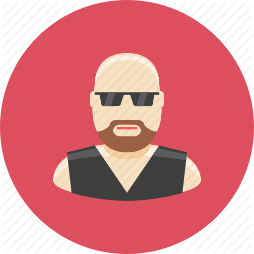

CHI SIAMO
Mission
Between the Lines è un sito dedicato ai veri amanti della lettura. Ti è capitato di iniziare a leggere un libro perché incuriosito dal titolo o da una recensione accattivante (che in realtà si è scoperto, troppo tardi, opera di un imbonitore di piazza), per poi pentirtene amaramente dopo venti pagine? Magari sospirando: "Ah... magari qualcuno mi avesse consigliato opportunamente!". Se avessi conosciuto Between the Lines avresti potuto leggere quella recensione che ti avrebbe impedito di leggere quel libro e consentito di dedicare il tuo tempo a più appassionanti e migliori letture. Qui puoi trovare suggerimenti di lettura che riguardano i tuoi autori e generi preferiti, puoi recensire i libri che ami e quelli che detesti, puoi leggere le recensioni di altri lettori come te e sentirti parte di una comunità di amanti della lettura.
Staff
- Antonio Badan
-

- Profilo
- Podista e chitarrista mancato, amatore professionista
- Libro preferito
- Basi di dati di Paolo Atzeni
- Frase celebre
- "Rega, cos'avete da fare stasera? C'è la maratona horror al cinema Marconi!"
- Francesco Trolese
-
- Profilo
- Triatleta, gli piace il ferro duro della bici e i Colli Euganei
- Libro preferito
- Architettura degli elaboratori for Dummies
- Frase celebre
- "Scusate ragazzi se non ho risposto prima ma ero sul Monte Venda e lì non c'è campo..."
- Luca Veronese
-
- Profilo
- Amante delle belle donne e tutor d'eccezione
- Libro preferito
- Il Deuteronomio
- Frase celebre
- "Mannaggia, mannaggia"
- Simone De Renzis
-
- Profilo
- Si esprime in morse, assembly, alfabeto semaforico, binario su richiesta
- Libro preferito
- Scouting for Boys
- Frase celebre
- "Meglio fare la cacca nei boschi o nei bagni deluxe del Paolotti del quarto piano?"